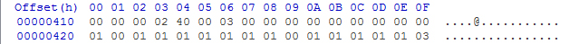

Configuration Table
Recovered from the ShaolinAssassin wiki · snapshot 20170812012646
POPStarter Configuration Table – Advanced Settings
This documentation concerns the advanced configuration of POPStarter r13, involving the harcoding (or the patch-on-load) of settings to the POPStarter ELF/KELF...
The POPStarter r13 ELF and KELF have a 32 bytes long configuration table, starting from the offset $410 (or 1040 in decimal).
- Caution : Unless you know exactly what it is for and what you’re doing, please don’t tamper with it. Hexediting of that stuff is for advanced users only. Make a backup of the default config before you start changing values. If you are not sure, read the section below (PPF bunch pack).
| Offset | Description | Values | Notes |
| $410 | Display of the debug texts/pages | 0x00 = disables the debug printing | |
| 0x01 < X < 0xFF = defines the delay between each page of texts | The higher the value is, the longer the delay is | ||
| 0xFF = the debug texts are displayed in realtime without delay (like in POPStarter 12 and lower) | |||
| $411 | Break the POPStarter execution after an error has occured | 0x00 = POPStarter prints the error message for a short time, then it kicks the user to the OSD. | |
| 0x0X POPStarter prints the error message and sleeps on that screen indefinitely | |||
| $412 | SetGsCrt hack | 0x00 = disabled (default) | |
| 0x01 = enabled | Helps with the HDTVs that can’t deal with the interlaced resolutions thru component (plain green screens and other rubbish displayed otherwise). | ||
| $413 | USB access delay, after the execution of the POPStarter embedded USB modules | 0x02 should be fine. Increase the value if POPStarter fails to access your USB device | |
| $414 | RESERVED (in USB operation mode) | Must be 0x40 | |
| $415 | User ID for individual VMCs | If set to 0x00, the function is disabled. | For assigning an ID to the couple of VMC, the value must be an ASCII character of “0”, “1”, “2”, “3”, “4”, “5”, “6”, “7”, “8” or “9” |
| $416 | POPS dev9 module loading (in USB operation mode) | 0x00 = Let POPS load it Default is 0x03. If you need to wake the NIC up (for debugging stuff for example), set this to 0x00 | |
| 0x03 = Forbids its loading | |||
| $417 | NOT USED | ||
| $418 | Force a single compatibility mode | 0x00 = No compatibility mode is forced | |
| 0x0X = the respective compatibility mode is forced and the automatic activator gets disabled | |||
| $419 | Force a single compatibility mode | 0x00 = No compatibility mode is forced | |
| 0x0X = the respective compatibility mode is forced and the automatic activator gets disabled | |||
| $41A | Force a single compatibility mode | 0x00 = No compatibility mode is forced | |
| 0x0X = the respective compatibility mode is forced and the automatic activator gets disabled | |||
| $41B | Force a single compatibility mode | 0x00 = No compatibility mode is forced | |
| 0x0X = the respective compatibility mode is forced and the automatic activator gets disabled | |||
| $41C | Force a single compatibility mode | 0x00 = No compatibility mode is forced | |
| 0x0X = the respective compatibility mode is forced and the automatic activator gets disabled | |||
| $41D | Force a single compatibility mode | 0x00 = No compatibility mode is forced | |
| 0x0X = the respective compatibility mode is forced and the automatic activator gets disabled | |||
| $41E | Force a single compatibility mode | 0x00 = No compatibility mode is forced | |
| 0x0X = the respective compatibility mode is forced and the automatic activator gets disabled | |||
| $41F | Force a single compatibility mode | 0x00 = No compatibility mode is forced | |
| 0x0X = the respective compatibility mode is forced and the automatic activator gets disabled | |||
| $420 | Patch the genuine HDD check | 0x00 = Don’t patch | Totally useless. When running in a PS2, a homebrew ATAD is used. When running in a PSX, the original POPS ATAD is used. Leave it to 0x01 |
| 0x01 = Patch | |||
| $421 | Loading and execution of the OSD shell of the POPS built-in BIOS | 0x00 = Load in the user memory and execute (don’t patch anything) | 0x01 has the same effect as the compatibility mode 0x06. Skips the CD checks and the PS logo. Both don’t work if the user uses a BIOS.BIN |
| 0x01 = Don’t load, don’t execute | |||
| $422 | Exception breakpoints control | 0x00 = Break the emulator (don’t patch anything) | 0x01 NOPs the break instructions of the 2nd-stage exception handler, allowing the user to trigger IGR after the emulation has crashed (in a few cases) |
| 0x01 = Don’t break the emulator | |||
| $423 | Original SLBB-00001 disc0 integrity check control | 0x00 = Don’t skip the integrity check | |
| 0x01 = Skip the integrity check | |||
| $424 | IGR exit method | 0x00 = Original SLBB-00001+PSBBN method | 0x00 causes the emulator to read the MBR by its own, without flushing the cache and without resetting the IOP. Crashy for most users. |
| 0x01 = POPStarter r13 method | |||
| $425 | IOPCD stack size (in USB operation mode) | 0x00 = Don’t patch | |
| 0x01 = Patch | |||
| $426 | Delcro’s patches (in USB operation mode) | 0x00 = Don’t apply those to POPS | |
| 0x01 = Apply those to POPS | |||
| $427 | Emulator modules loading failure | 0x00 = Don’t patch (Kick to the PS2 OSD) | For your h4×0ring needz. . Patch it so you no longer have to care about the returned code of your injected IRX. |
| 0x01 = Patch (Ignore and continue) | |||
| $428 | Internal HDD initialization failure | 0x00 = Don’t patch (Kick to the PS2 OSD) | For your h4×0ring needz. |
| 0x01 = Patch (Ignore and continue) | |||
| $429 | Virtual Memory Cards control | 0x00 = Use both VMCs | |
| 0x01 = Don’t use VMCs at all | |||
| 0x02 = Use just the first VMC in the first virtual slot | |||
| $42A | Automatic PAL patch upon European VCD recognition | 0x00 = Disabled | The Automatic PAL Patcher of POPStarter expects “Euro” at the offset $102514 of the VCD |
| 0x01 = Enabled | |||
| 0x02 = Force 480p | |||
| $42B | Resident modules loader | 0x00 = Disabled | POPS/MODULE_0.IRX POPS/MODULE_1.IRX... up to POPS/MODULE_9.IRX. Are executed AFTER the IOP gets reset with IOPRP252.IMG, for Great Justice. |
| 0x01 = Enabled | |||
| $42C | Software PowerOff fix | 0x00 = Disabled | Can’t remember what it is. Perhaps it’s a redundant option of a deimplemented function… Prolific, mass ? |
| 0x01 = Enabled | |||
| $42D | IGR textures loader | 0x00 = Disabled | POPS/IGR_BG.TM2 POPS/IGR_NO.TM2 POPS/IGR_YES.TM2 |
| 0x01 = Enabled | |||
| $42E | Game license/region check of the POPS built-in BIOS | 0x00 = Leave unpatched | The patch just NOPs the loop. The PS logo is not shown when a non-JAP game is run. |
| 0x01 = Patch it so it does not loop the check when the VCD isn’t NTSC J | |||
| $42F | POPStarter automatic compatibility mode activator | 0x00 = Do not enable anything | If set to 0x03 and a compatibility mode is forced, it will be changed to 0x02 automatically (applies the forced modes and not the automatic ones) |
| 0x01 = Enable the automatic compatibility modes activation | |||
| 0x02 = Enable the other subroutines (like LibCrypt cracks, when available) | |||
| 0x03 = Enable all |
Default values :
PPF bunch pack :
=================================================================================
-----------------------PPF Bunch pack for POPStarter r13-------------------------
=================================================================================
Hi !
I am a bunch of .PFF files. You can use me to enable POPStarter advanced settings. You need a PPF patcher (such as PPF-O-Matic) to use me and apply PPF over POPStarter.ELF.
Here is what I can do for you :
- File name : description (notes)
- NO_LC_CRACKS.PPF : Disables the built-in LC cracks of POPStarter r13 (from WIP05. Automated modes are disabled also).
- DEBUG_AND_HALT.PPF : Prints the screen debug messages and halt (from WIP05).
- NO_VMC.PPF : Disables VMC feature (new)
- ONLY_1ST_VMC.PPF : Only the first VMC in the first virtual slot is created (new)
- NO_PAL.PPF : Disables the automatic PAL patch (new)
- FORCE_MODEX.PPF : Mode X hardcoded into POPStarter r13 (new)
- DEFAULT_IGR_TEXTURES.PPF : Disables the IGR textures loader (new)
- LC_ONLY.PPF : Enable the other subroutines (like LibCrypt cracks), disable the compatibility modes. (new).
- NO_AUTO_PATCH.PPF : Disables everything (modes, LC cracks...) (new).
Images & screenshots
